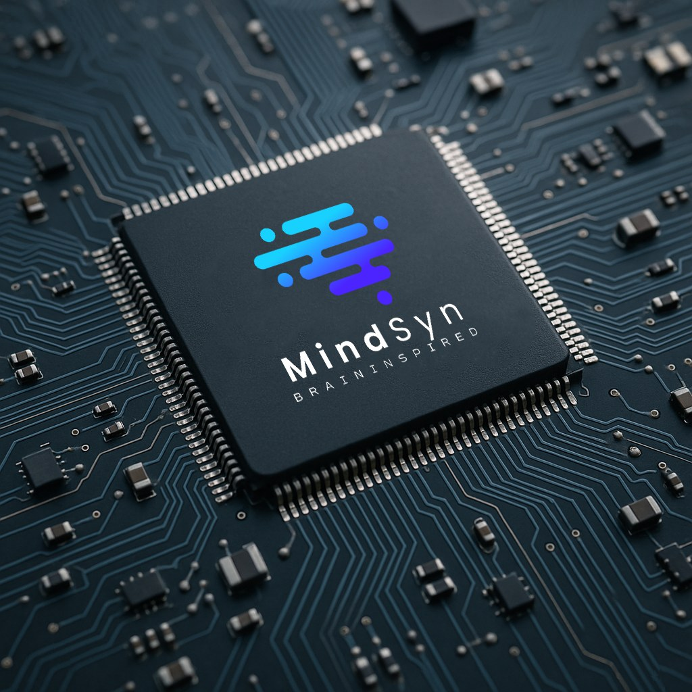

Today's AI chips compute even when nothing happens
Every clock tick wakes thousands of compute units at once. Even when the input has not changed at all, the power is spent all the same.
Neuromorphic AI Processor
MindCore computes only at the instant a spike arrives. Event-driven instead of clock-driven, it runs real-time AI on a battery.
FPGA prototype verified · ASIC in development
The shift
Every clock tick wakes thousands of compute units at once. Even when the input has not changed at all, the power is spent all the same.
Like a biological neuron, computation happens only where something changed. The rest of the fabric stays silent, and silence costs nothing.
Event-driven processing combined with temporal coding cuts energy by 10-100x while holding accuracy.
Product
A spike-driven, programmable neuromorphic accelerator. The efficiency of a biological brain, cast into silicon for on-device AI.

Leaky Integrate-and-Fire neurons implemented directly in hardware, reproducing the behaviour of real neural circuits.
An asynchronous fabric that computes only on spike events, eliminating wasted switching power.
On-chip STDP learning brings real-time adaptation to the edge.
A multi-chip scalable architecture for building large neural systems.
Sub-millisecond inference for applications that must decide immediately.
Ultra-low power design that can run on harvested solar or vibration energy.
Technology
From algorithm to silicon to deployment, we design the entire neuromorphic stack ourselves.
Network architecture modelled on biological spiking neurons, native to temporal information.
Computation is triggered by events, removing redundant work and power at the source.
Training and quantization techniques that lift SNN accuracy to conventional deep-learning levels.
An ultra-low-power on-device AI stack for mobile and IoT hardware.
Demo
Not a simulation. This is MindCore inferring in real time on the FPGA prototype board.
Applications
Real-time object recognition and tracking with event cameras
AI diagnostics for low-power wearable medical devices
Real-time perception and decision making
Biologically inspired sensorimotor control
Ultra-low-power edge intelligence
Neural signal processing and interpretation
Research
Our technology stands on peer-reviewed research.
IEEE International Symposium on Embedded Multicore/Many-core Systems-on-Chip (MCSoC 2025)
@inproceedings{park2025mindcore,
title = {MindCore: Spike-Driven Programmable Accelerator for On-device Neuromorphic Computing},
author = {Park, Hawon and Lee, Si Yong and Lee, Ryangjin and Kim, Yoora and Yang, Yoon-Seok},
booktitle = {IEEE International Symposium on Embedded Multicore/Many-core Systems-on-Chip (MCSoC)},
year = {2025}
}
Power efficiency from event-driven processing
Accuracy on par with conventional deep learning
Design that follows how the brain actually works
Fast inference that exploits timing
Team
Engineers who have lived in both worlds: neuroscience and silicon.

Founder & CEO
Assistant Professor, Department of Computer Science, SUNY Korea
Assistant professor in Computer Science at SUNY Korea. Previously a Tensor Processing Unit (TPU) silicon and research engineer at Google in Sunnyvale, California. Before Google, he was a research scientist at the Neuromorphic Computing Lab at Intel Labs in Santa Clara from 2012 to 2022, working on neuromorphic computing systems and AI chip design. He earned his Ph.D. in electrical and computer engineering from Texas A&M University.
Principal Research Engineer
Senior Research Engineer
Research Engineer
Contact
Technical collaboration, pilot deployments and investment enquiries are all welcome.
yoonseok.yang@sunykorea.ac.krIncheon, South Korea